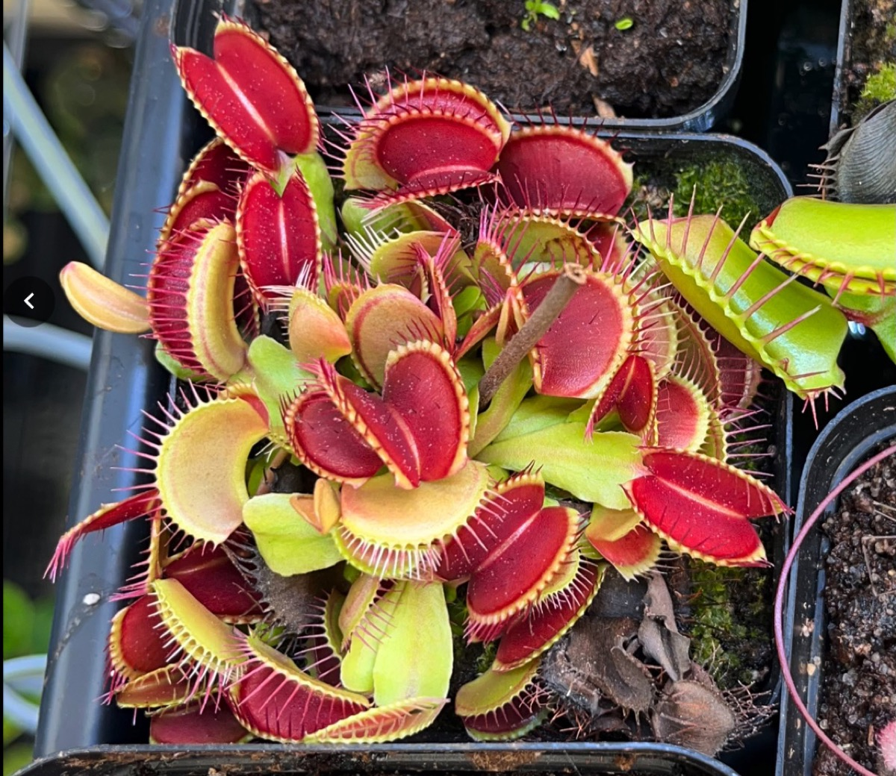
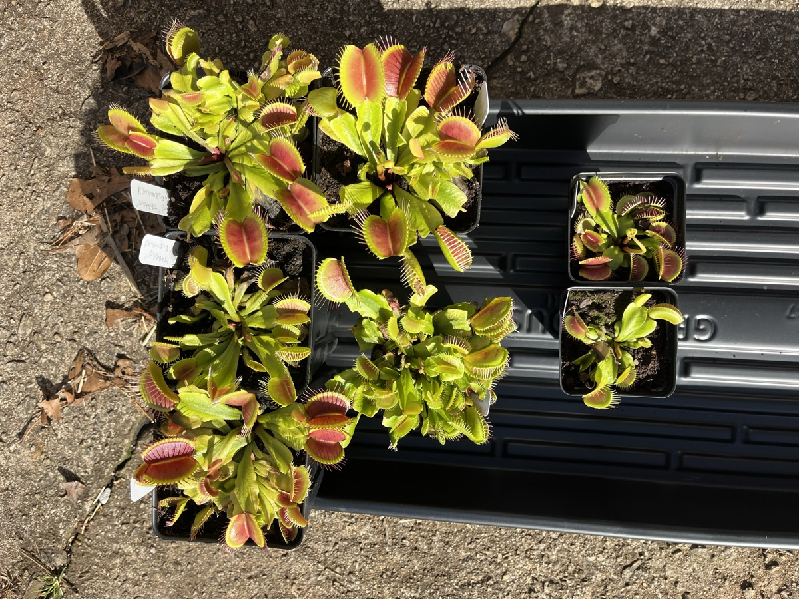
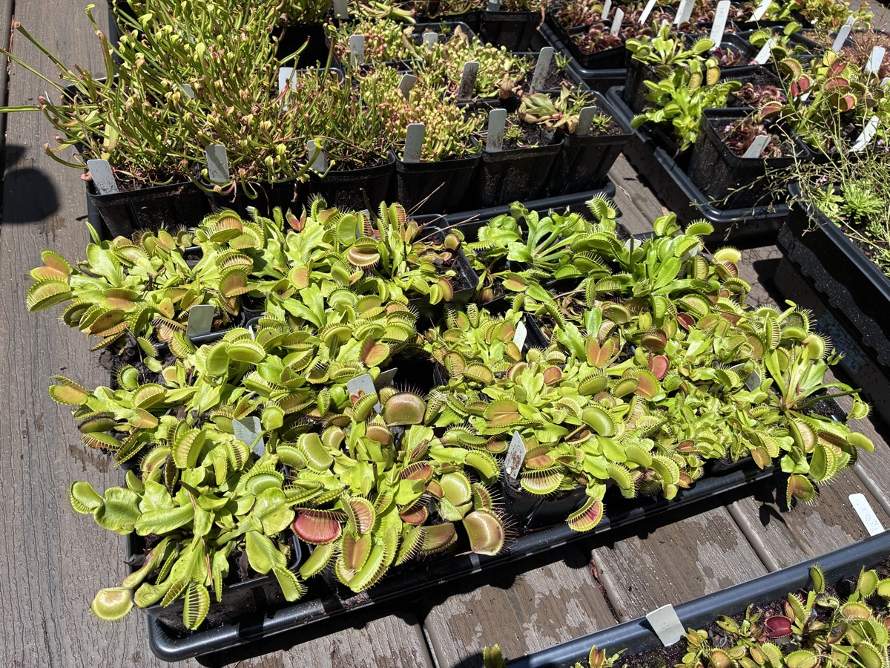
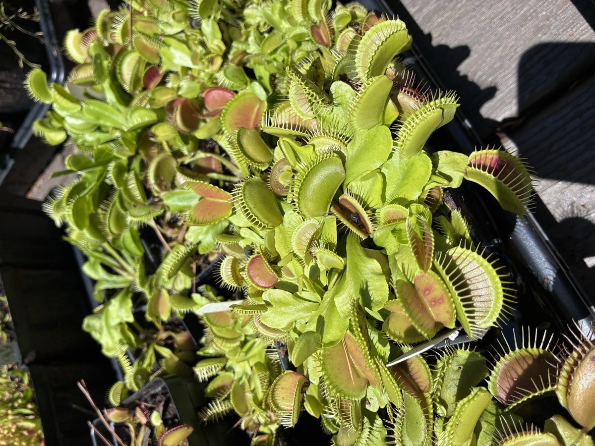
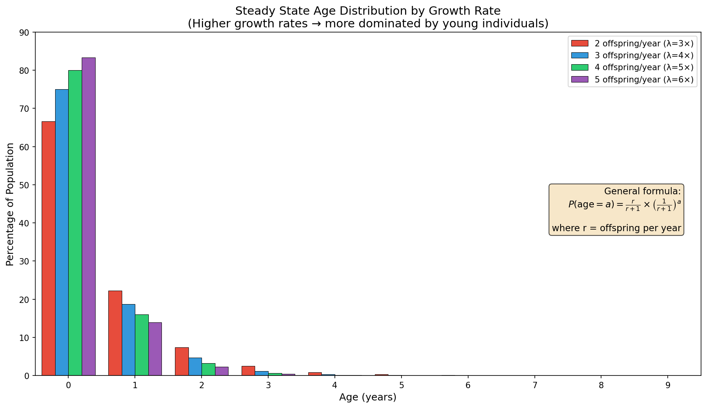
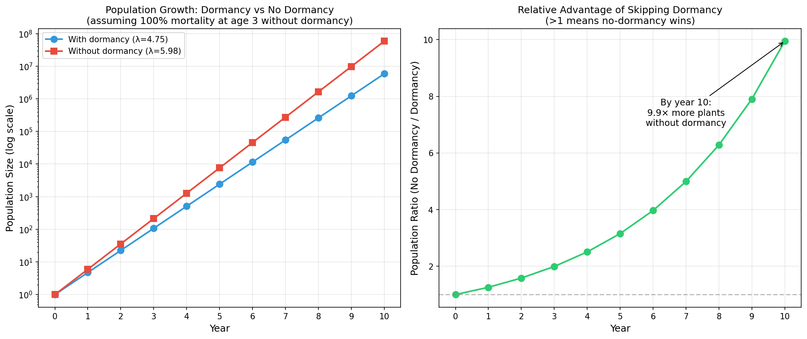

If you've spent any time in the carnivorous plant community, you've almost certainly been told that Venus flytraps must go through winter dormancy or they'll eventually weaken and die. This claim gets repeated so often that it's treated as settled fact. But when you actually look for rigorous evidence supporting it, you come up short.
I want to be upfront about my own growing practice: the vast majority of my plants go through dormancy every year, and I've only recently begun experimenting with skipping it. I started with a single generic clone from Target about three years ago, specifically because I expected it to decline and didn't want to risk a valuable cultivar. It hasn't declined. That experience, combined with a careful look at the available evidence, has convinced me that the importance of dormancy is significantly overstated in this community. In this post, I'll walk through the evidence, share results from my own experiment, and use a bit of population biology to show that even under worst-case assumptions, skipping dormancy is a winning strategy for anyone looking to maximize growth.
The evidence against required dormancy
It helps to be precise about what kind of claim is on the table. "Flytraps need dormancy or they die" is a strong claim, and strong claims are cheap to break: a single well-documented counterexample is enough, no controls required. If someone grows a flytrap without dormancy for a decade and it is fine, the claim is false. "Dormancy is beneficial" is a much weaker claim, and it is the one that actually needs controlled experiments, since testing it means comparing regimes with everything else held constant. Most of the argument in the hobby runs the two together.
With that distinction in hand, there are several independent lines of evidence suggesting that dormancy is not physiologically necessary for Venus flytraps.
The first comes from experienced indoor growers. John Brittnacher, former president of the International Carnivorous Plant Society, has grown Venus flytraps indoors without dormancy for over 20 years. In his ICPS care guide for Dionaea and in a more detailed article in Carnivorous Plant Newsletter, he is unequivocal:
"In spite of what many people believe, VFTs do not require a terrarium nor do they require dormancy to survive long term indoors. The plants only require dormancy if they are going to experience freezing temperatures outside. Putting an indoor plant in the refrigerator to encourage dormancy is a waste."
Brittnacher isn't alone in this experience. Matt Miller, owner of Flytrapstore.com and one of the most prominent Venus flytrap vendors in the country, has come around to a similar view:
"You've definitely opened my eyes (along with what I've seen John Brittnacher do over the years) to what Dionaea can withstand if they are constantly fed and provided good artificial lighting. Again, it is very much like what they do in tissue culture."
The second line of evidence comes from tissue culture itself, which represents one of the longest-running and most highly replicated experiments in dormancy-free cultivation. Commercial tissue culture labs grow and serially divide Venus flytrap cultures for thousands of sequential generations under constant LED lighting and stable environmental conditions. These plants do not experience dormancy of any kind. The cultures only need to be restarted when accumulated somatic mutations eventually cause developmental issues, which can take decades. If the absence of dormancy caused physiological decline, tissue culture operations would not be viable, yet they clearly are.
The third line of evidence comes from tropical growers. Many people successfully cultivate Venus flytraps outdoors in tropical climates, where seasonal changes in photoperiod and temperature are minimal. Growers near the equator report year-round active growth with no stalling or decline. This is admittedly the weakest of the three lines of evidence, since even modest variation in photoperiod could theoretically induce some degree of dormancy, but the consistent reports of uninterrupted growth are suggestive.
Three years without dormancy: my experience
I've now gone three full years without dormancy for a typical Venus flytrap clone purchased from Target. The common prediction is that plants will become "exhausted" without a rest period, but I have not seen any sign of this. Over those three years, this single clone has produced roughly 60 divisions.
To test the dormancy question more directly, I ran a small experiment. In September, I took a single plant with seven growth points and divided it. Two divisions were placed under dormancy conditions (9 hours of light, 50 to 60°F) from September through January, while five were kept under standard growth conditions (16 hours of light, 70 to 80°F) the entire time. In late January, I brought the two dormant divisions back under my normal growing conditions.


As of March, all seven divisions are doing well. The five that skipped dormancy are each the same size or larger than the parent clone was back in September when the entire pot was divided, and they show no signs of exhaustion whatsoever. Several are ready to divide again. The two that went through dormancy are healthy, but considerably smaller. In practical terms, skipping dormancy gave me an entire extra generation of asexual growth: while the dormant pair sat idle for three months, the non-dormant clones were actively growing and are now significantly further along in their development.
Update, September 2026
The no-dormancy line kept going through the summer. The tray below is the Target clone stock on August 8, 2026, nearly a year after the parent plant in the first photo was divided. I now have somewhere between 50 and 75 plants from this one clone in the no-dormancy experiment, which is more than I have room for, and that surplus is the reason for the citizen-science giveaway described at the end of this post.


The math: why skipping dormancy wins even in the worst case
Let me take this a step further with some quantitative reasoning. Even if we grant the strongest possible version of the "old plants need dormancy" argument, the math of population biology still favors skipping dormancy, at least for anyone whose goal is to grow more plants.
Biological populations grow exponentially by default: as organisms reproduce, their offspring reproduce in turn, and the population compounds. A key consequence of exponential growth is that the age distribution stabilizes very quickly into a geometric distribution, where young individuals massively outnumber old ones. If each plant produces five divisions per year, then by year three the population is roughly 83% age-zero plants, 14% age-one, 2% age-two, and less than half a percent age-three or older. The original founder represents a vanishingly small fraction of the total.
Put differently, the value of any one individual falls as the population grows. One plant out of a population of one is a big deal. One plant out of sixty of its own descendants is rounding error, and what happens to it stops mattering.

This holds even at much slower growth rates. At just two divisions per year, only about 4% of the population is three or more years old. The faster the growth, the younger the population skews.
Steel-manning the dormancy cost: let's assume every plant that skips dormancy dies after 2 years. What then?
Let's assume the absolute worst-case scenario: lack of dormancy causes 100% mortality at age 3. Every single plant that hits its third birthday just keels over. Brutal, right? Surely then inducing dormancy would be better than skipping it?
But here's the trade-off: dormancy costs you roughly 3 months of growing time per year, assuming you are an indoor grower with access to lights. If you get 5 divisions per year without dormancy, you should only get about 3.75 with it.
So which strategy wins? We can solve for the population growth rate (λ) using the Euler-Lotka equation, which is the fundamental equation for finding the growth rate of an age-structured population. The general form is:
1 = Σ (la × ma) / λ(a+1)
where la is the probability of surviving to age a, ma is the fecundity at age a, and λ is the annual population growth factor we're solving for.
With dormancy (infinite lifespan): Every individual survives forever (la = 1 for all a) and produces r = 3.75 offspring per year. The infinite sum simplifies to:
1 = r / (λ − 1)
Solving for λ: λ = r + 1 = 4.75
This is the familiar result that for immortal populations, the growth factor is just one plus the per-capita birth rate.
Without dormancy (death at age 3): Individuals produce r = 5 offspring per year but die when they hit age 3. The sum truncates to just three terms:
1 = r/λ + r/λ² + r/λ³
Multiply through by λ³ and rearrange:
λ³ − 5λ² − 5λ − 5 = 0
Solving numerically: λ ≈ 5.98
Since 5.98 > 4.75, the no-dormancy strategy wins. The population grows about 26% faster per year, and that advantage compounds:

Starting from a single plant, after 10 years:
- With dormancy: ~5.8 million plants
- Without dormancy: ~58 million plants
That's nearly 10× more plants over a decade by skipping dormancy, even though every single one of them dies young. The extra growing time, and the compounding power of exponential growth, more than compensates for the (hypothetical) lifespan penalty.
The takeaway: even if we grant the strongest possible version of the "old plants need dormancy" hypothesis, it still doesn't matter. The math favors skipping dormancy as long as you're getting that extra growing time. And remember, there's no actual evidence that old non-dormant plants die, so this is a worst-case scenario that almost certainly overestimates any real penalty.
Addressing other counterarguments
The most common objection is some version of "I skipped dormancy once and my plant did poorly the next year." I don't doubt these experiences, but without a controlled experiment that varies dormancy while holding all other conditions constant, there's no way to attribute the outcome to dormancy specifically. Indoor growing conditions vary in countless ways, from light quality and duration to watering and temperature, and any of these could be responsible. This is a textbook case of confirmation bias: you expected dormancy to matter, so when something went wrong, you attributed it to the most salient variable.
Another frequent response is that dormancy is part of the plant's natural cycle, so of course it must be necessary. Venus flytraps do go dormant in their native habitat in the Carolinas, but they do so because they need to survive freezing winters. Dormancy is a survival mechanism for cold, not an intrinsic physiological requirement for health. Many plants have environmentally inducible developmental programs that they can skip indefinitely without consequence. Some annuals, for instance, can be kept growing for years if the photoperiod never triggers flowering. The existence of a developmental program doesn't mean the organism requires it.
Tolerating a condition is also not the same as wanting it. Flytraps are better than their competitors at getting through cold winters on nutrient-poor soil, which is why they persist in Carolina bogs, but that is a statement about what they can survive, not about what makes them grow. Under lights, warmth and heavy feeding I get something like a 25-fold expansion of a clone year over year. Nothing close to that happens in nature, precisely because I am not keeping them in natural conditions.
A subtler objection is the claim that plants growing indoors, in tissue culture, or in the tropics might be experiencing some kind of "cryptic dormancy" that isn't externally visible. This is a textbook example of moving the goalposts. Tissue culture plants in particular are grown under constant conditions optimized for maximal growth. Any individual that slowed down would simply be outcompeted by those that kept dividing, and would no longer be an ancestor of future generations. The idea that these plants are secretly resting is not supported by how tissue culture actually works.
"I want my plant to live as long as possible"
A related objection is that even if the population does fine, the grower wants their particular plant to live as long as it can. This one deserves a closer look, because the way flytraps grow undercuts it more than people realize.
Venus flytraps grow sympodially. Each rosette has a single active growing point, the apical meristem, and that one meristem makes every new leaf. When the plant flowers, the meristem converts into the flower stalk and is consumed by it (botanists call this terminal flowering, or floral determinacy). The rosette has just spent its only source of new leaves. What saves it is a dormant axillary bud lower on the shoot, held in check until now by hormones from the apex. With the apex gone, that suppression lifts, the bud wakes, and a new growing point takes over. Contrast this with monopodial plants, where the main shoot keeps growing indefinitely and flowers form off to the side without ever ending it.
Look at what that means. Every time a flytrap flowers, it retires the old growing point and hands the rosette to a new shoot from a bud that was sitting dormant, activating exactly the same machinery a grower uses when taking a division. The old plant is gone and a clone has replaced it. A happy flytrap flowers every year, so no individual growing point lasts very long, probably no more than two or three years even under ideal conditions. The plant you are hoping to keep alive for a decade has already been replaced several times over. Cutting the scape early saves the plant the cost of building a flower, but it does not undo the switch: by the time you can see a scape, the meristem has already been spent.
So "keeping the original plant alive" is not a coherent goal. Either you count each growing point as an individual, in which case the original died the first time it flowered, or you stop worrying about where one individual ends and the next begins (my day job is the evolution of multicellularity and individuality, and I promise those boundaries are blurrier than they look) and count what actually matters: the number of healthy growing shoots of the same clone. By that measure a plant that skips dormancy and divides is not dying. It is doing what flowering does anyway, just more often.
What I'm not saying
I want to be clear about what I am and am not arguing. I am not saying that dormancy is never useful. If your plants are going to experience freezing temperatures, they absolutely need to be dormant or they will die. I can also imagine that certain combinations of environmental signals, like warm temperatures paired with very short photoperiods, might cause real problems by sending conflicting developmental cues. That would be an interesting hypothesis to test.
I'm also not telling anyone how to grow their plants. There are plenty of good reasons to put your flytraps through dormancy. Maybe you like the way plants look after a dormancy period. Maybe you want a break from caring for them over the winter. Maybe you don't have room indoors for thousands of plants, or don't want to spend the money on lights and electricity. Maybe you want to synchronize flowering time to do crosses. Maybe you just want to provide them with a more natural life cycle. All of these are perfectly valid reasons.
My argument is simply that we should stop telling new growers that dormancy is an absolute requirement for plant health, because the evidence does not support that claim. In particular, advising someone to use the refrigerator method (which is arguably the worst common approach to inducing dormancy) because "otherwise your plant will die" is, in my view, bad advice. A better recommendation for an indoor grower would be to invest in a good grow light and enjoy vigorous, actively growing plants all winter long.
Other people are testing this too
Brooks Carver at Carnivorous Plants Hub made a video on this question, Is Venus Flytrap Dormancy Really Necessary? The Evidence Says Maybe Not!, that draws on this post and lays out the population math about as accessibly as I have seen it done. He is also dividing some of his own cultivars this fall, growing half indoors with no dormancy and half through his usual dormancy routine, and tracking care, growth and divisions in each group. That is exactly the kind of controlled comparison this question needs.
I would like more of them. I have far more no-dormancy Target clone divisions than I can keep, so for a limited time I am tucking a free one into any order from the shop, for anyone willing to pick a regime, dormancy or not, and report back over the coming years. A mix of regimes across many growers and many conditions is the whole point. Details are on the sale page.
The bottom line
We have multiple independent lines of evidence, from experienced indoor growers, from decades of commercial tissue culture, and from tropical cultivation, showing that Venus flytraps can thrive indefinitely without dormancy. My own three-year experiment with a generic clone has produced dozens of healthy divisions with no sign of decline. And even under the most pessimistic assumptions about what skipping dormancy might do to older plants, the population-level math still overwhelmingly favors continuous growth.
The carnivorous plant community has a lot of received wisdom that deserves a closer look. I think the dogma around dormancy is one of the clearest cases where the conventional advice doesn't hold up to scrutiny. If you have evidence to the contrary, especially from controlled experiments, I'd genuinely love to see it. But until that evidence materializes, I'll keep my lights on year-round.